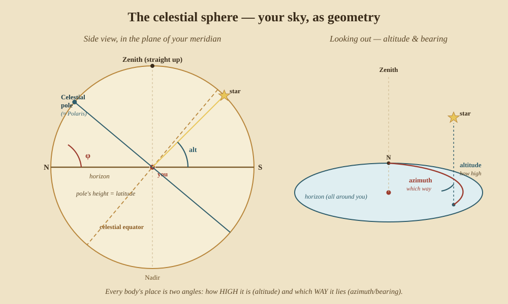
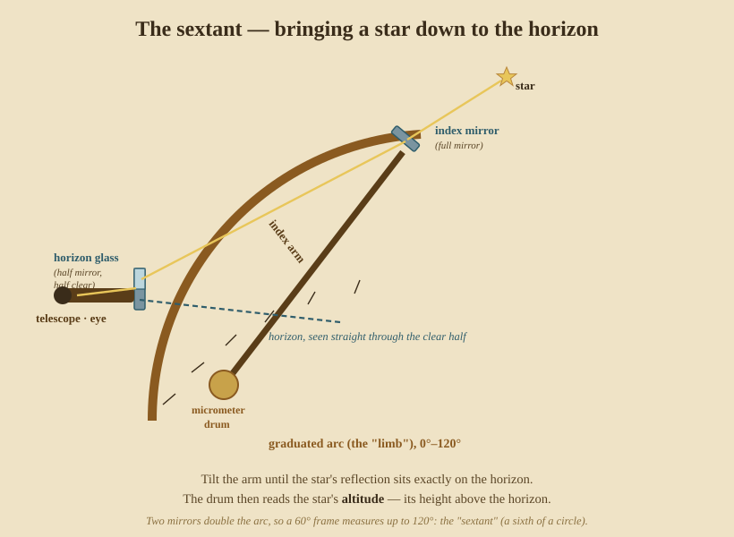
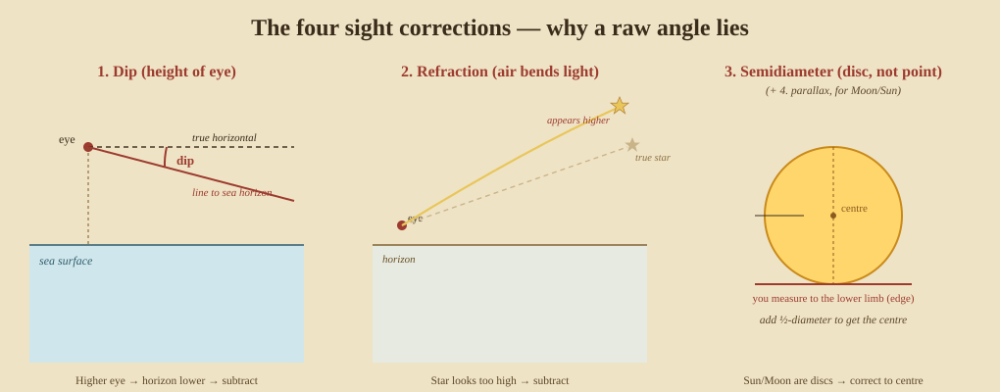

The Foundations
Everything that follows rests on four ideas: where you are is two numbers; the sky is a dome of angles; those angles are measured with a mirror instrument; and when it is, is the same question as how far east you are. Get these straight and the rest of the book is detail.
1. Where am I? — two numbers on a ball
A position is a latitude and a longitude — Part 0 built these from nothing. The one fact to carry forward into the methods: the two coordinates are found by completely different means — latitude from the height of a heavenly body, longitude from time. That asymmetry shapes everything from here on.
Who & when. The grid itself is ancient. Hipparchus of Rhodes (~150 BC) invented the trigonometry, catalogued the stars, and proposed fixing places by latitude and longitude; Ptolemy’s Geographia (~150 AD) tabulated them for the known world — though his longitudes were guesses, because nobody could yet measure time at a distance.
2. The celestial sphere — your sky as geometry
Stand anywhere and the sky looks like the inside of a dome resting on the horizon. Treat it as real: a giant sphere with you at the centre. You need only two angles to place any star, Sun, or planet on it:
- Altitude — how high above the horizon, 0° (on it) to 90° (straight up, the zenith).
- Azimuth (bearing) — which way round the horizon, measured from north.

The left half above is the view in the plane of your meridian (the north–south line through your zenith). Notice the single most useful fact in navigation, sitting right there in the geometry: the celestial pole stands above your horizon by an angle equal to your latitude. That is why the pole star gives latitude for free (Part II).
The right half is what your eye actually does — pick a body, note how high it is and which way it lies. A sight is nothing more than measuring one of those two angles precisely and knowing the exact time you did it.
3. Measuring the angle — the sextant
To measure altitude at sea you need an instrument that works from a heaving deck with no fixed reference but the horizon itself. The answer is a double-reflecting instrument: two mirrors bring the image of a star down until it kisses the sea horizon, and a scale reads the angle between them.

Because the light bounces off two mirrors, moving the arm through 60° swings the reflected star through 120° — so a frame of only one-sixth of a circle measures a full 120°. Hence sextant. You bring the star down to the horizon, rock the instrument gently so the star’s image swings like a pendulum and just grazes the sea at the bottom of its arc, and read the drum. That reading is the star’s altitude — needing only correction (next section) to be true.
Who & when. The reflecting principle came from John Hadley and, independently, Thomas Godfrey around 1730–31 (the octant); John Bird extended the arc into the true sextant about 1757 so it could measure the wide Moon-to-star angles that lunars demanded. Before mirrors, sailors used the mariner’s astrolabe (a weighted brass ring, perfected by Islamic astronomers and taken to sea by the Portuguese in the 15th century), the cross-staff (described by the Provençal scholar Levi ben Gerson in 1342), the backstaff (John Davis, 1594, so you needn’t stare into the Sun), and — in the Indian Ocean — the Arab kamal, a knotted string and a little board of wood.
4. The four corrections — why a raw angle lies
The number off the drum is never quite the true altitude. Four things distort it, and every real sight applies them:

- Dip — your eye is above the sea, so the horizon you use is slightly below the true horizontal. The higher your eye, the more it dips. Subtract.
- Refraction — the atmosphere bends starlight downward, making a body look higher than it is (strongest near the horizon). Subtract.
- Semidiameter — the Sun and Moon are discs, not points; you measure to an edge (the limb), so correct to the centre.
- Parallax — the Moon (and slightly the Sun) is close enough that your view from the surface differs from the ideal view from Earth’s centre. Add.
Apply the four and the raw drum reading becomes Ho, the observed altitude — the honest angle the rest of the arithmetic depends on. Skip them and a sight can be wrong by many miles.
Who & when. Refraction was measured by Tycho Brahe and later Cassini in the 16th–17th centuries; the corrections were bundled into printed tables so a working navigator could look them up rather than compute them.
5. Time is longitude
Here is the asymmetry of Part 0 made into a foundation. The Earth turns 360° in 24 hours — 15° of longitude per hour. So if you know the exact moment (in Greenwich time) that the Sun crosses your meridian at local noon, the gap between that and 12:00 at Greenwich is your longitude, at 15° per hour.
That is why latitude was solved for centuries before longitude: measuring a height needs no clock, but measuring an east–west position needs you to carry Greenwich time across the ocean in your pocket. Two complications the almanac handles for you: the Sun is not a perfect clock (the equation of time — up to about 16 minutes’ difference between sundial and clock across the year), and you must know which Greenwich instant your noon corresponds to.
Who & when. Greenwich became the reference meridian because Britain’s Nautical Almanac (from 1767) was reckoned from it; the world formally adopted it at the 1884 International Meridian Conference. How to keep Greenwich time at sea — the chronometer, and the lunar-distance method that preceded it — is the whole of Part III.